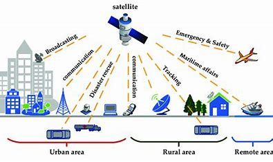

India has made significant strides in satellite technology, particularly through projects like GSAT
(Geostationery Satellite) and NAVIC (Navigation with Indian Constellation). These contributions have
greatly enhanced communication, navigation,and disaster management capabilities across the country.
Following are the two of many projects India has made in this field.
The GSAT series is a group of communication satellites launched by the Indian Space Research Organization
(ISRO). These satellites play a crucial role in connecting people across India, especially in remote areas
where traditional communication infrastructure is lacking. GSAT satellites facilitate educational programs,
telemedicine, and digital broadcasting, therefore improving access to information and services. They support
weather forecasts by transmitting real-time data, which is essential for agriculture and disaster preparedness.
Accurate weather predictions help farmers plan their activities better and prepare for unexpected weather events.
The first GSAT satellite, named GSAT-1, was launched on September 18, 2001.
NAVIC is India's regional navigation satellite system, a vital tool for accurate positioning. Operated by ISRO, NAVIC
provides precise location information to users in India and neighbouring regions. It is particularly useful for navigation
in transportation, which enhances road safety and efficiency. Moreover, NAVIC assists in disaster managementby enabling
accurate geolocation of affected areas. This allows for swift deployment of resources and aid during natural disasters like
floods or earthquake. In conclusion, the NAVIC satellite system represents a significant advancement in India's capabilities
for independent navigation and positioning services, enhancing geographic precision for a wide range of applications The first
NAVIC satellite, named IRNSS-1A, was launched on July 1, 2013.
In conclusion, GSAT, NAVIC, and other satellites demonstrate India's commitment to leveraging satellite technology for national
development. By improving communication, enhancing navigation capibilities, and aiding in disaster management, these projects
not only contribute to the technological advancement of the country but also significantly improve the quality of life fo its citizens
As India continues to invest in and develop satellite technology, the benefits will only grow, helping to create a more connected and
resilient society.
link to starting page
starting page